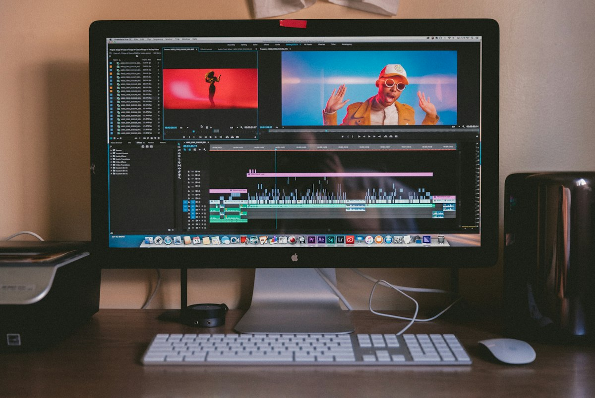

A Beginner’s Guide to Creating Your First AI-Generated Video
Category: video | Language: en
In the past, creating a high-quality video required expensive cameras, professional lighting, and years of editing experience. Today, artificial intelligence has lowered these barriers, allowing anyone with a computer and an internet connection to generate cinematic clips from simple text descriptions. AI video creation is the process of using generative models to turn prompts or still images into moving footage. This guide is designed for beginners who want to explore this technology for social media, small business marketing, or creative storytelling without needing a background in film production.
To start, you must understand two core concepts: Generative AI and Prompts. Generative AI is a type of technology that 'learns' from millions of existing videos to understand what objects, light, and movement look like. When you provide a 'prompt'—which is a written instruction—the AI predicts and assembles pixels to match your description. For example, if you type 'a vintage car driving through a rainy city at night,' the AI doesn't search for a clip; it mathematically constructs a new one from scratch. Understanding that the AI is 'imagining' the scene based on your words is the first step to mastering the medium.
There are two primary ways to create AI videos: Text-to-Video and Image-to-Video. Text-to-Video tools, such as Runway Gen-2 or Pika Labs, allow you to type a sentence and receive a 3-to-5-second clip. Image-to-Video tools, like Luma Dream Machine or Kling AI, take a photo you have already taken and add motion to it. For beginners, Image-to-Video is often more reliable because the AI already has a clear visual reference to follow. Most of these platforms operate on a 'freemium' model, offering a few free generations per day or month, while unlimited or high-speed processing usually requires a subscription ranging from $10 to $30 USD.
The actual process of creating a video follows a straightforward workflow. First, choose a platform and sign up for an account; most work directly in your web browser, so you do not need a powerful computer. Second, navigate to the creation interface and enter your prompt. A good beginner prompt includes a subject, an action, a setting, and a camera style—for instance, 'A majestic eagle soaring over snow-capped mountains, cinematic wide shot.' Third, click the 'Generate' button. It usually takes between two and five minutes for the AI to render the video. Once finished, you can preview the result and download it as an MP4 file to your device.
Let’s look at a practical scenario: a local coffee shop owner wants to create a short video for an Instagram Story. Instead of hiring a videographer, the owner takes a high-quality photo of a steaming latte. They upload this photo to an AI tool and use the prompt: 'Slowly zoom in as steam rises and swirls in the air, soft morning sunlight.' The AI maintains the look of the actual coffee shop but adds the realistic motion of the steam and a professional camera zoom. This creates a high-end advertisement in minutes using only a single smartphone photo and a basic AI subscription.
One of the most common mistakes beginners make is using vague or overly short prompts. Typing 'a cat' will likely result in a blurry or static image. To avoid this, be specific about the environment and lighting, such as 'a fluffy orange cat sleeping on a sun-drenched wooden windowsill.' Another mistake is expecting the AI to handle complex human physics, like walking or talking, which often leads to 'glitching' where limbs appear to merge. If your video looks strange, try reducing the 'Motion' slider in the settings or choosing a scene with simpler movements, like flowing water or drifting clouds, which AI handles much more effectively.
Safety and ethics are critical when working with AI. Most reputable tools have built-in filters to prevent the creation of 'deepfakes' (videos of real people saying or doing things they didn't do) or violent content. It is important to use these tools responsibly and never attempt to bypass safety protocols. Additionally, be aware of copyright; while you generally own the rights to the videos you generate on paid plans, the legal landscape regarding AI-generated art is still evolving. Never use AI to mimic the specific style of a living artist or to generate content that uses copyrighted characters without permission, as this could lead to legal complications.
To move forward, the best next step is to experiment with a single tool rather than jumping between several. Visit a site like RunwayML or Luma Labs and use their free daily credits to animate a photo you already own. Focus on 'prompt engineering'—the practice of tweaking your words to see how the AI reacts. For example, try adding words like 'slow motion,' 'cyberpunk style,' or '4k resolution' to see how they change the output. By starting small and focusing on short, 5-second clips, you will quickly learn how to control the AI and produce professional-looking video content for any project.